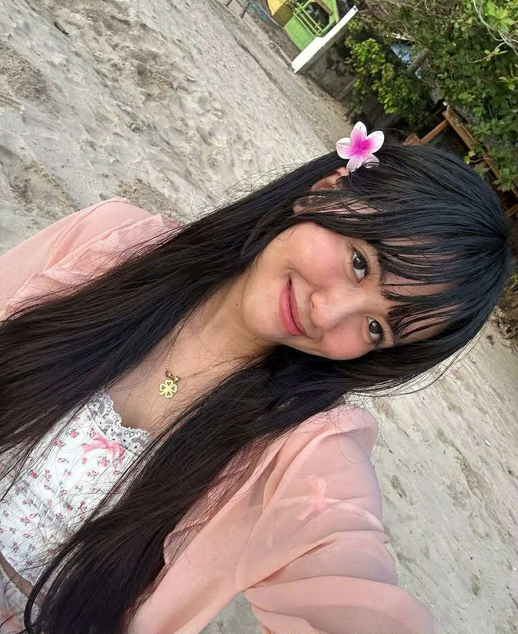
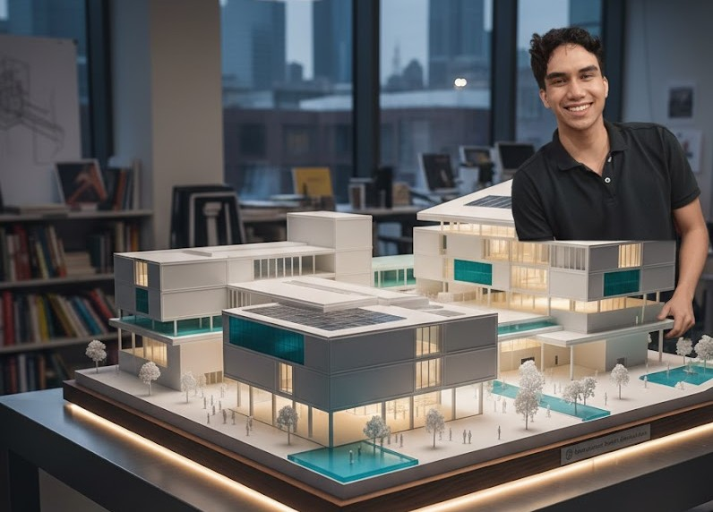

@gabriella_lPD ✔Verified Scholar
Sharing my coding montage — proof of my 100% learning journey!౨ৎ ˖ ࣪⊹ •👩🏻💻•⊹₊ ⋆୨ৎ

Sharing my coding montage — proof of my 100% learning journey!౨ৎ ˖ ࣪⊹ •👩🏻💻•⊹₊ ⋆୨ৎ
I just finished my adms exam and i was like stressing and all, tara jog?😮💨

hi guys! kinsay gusto mo volunteer ugma kay gekapoy na ato president awa ra jud


I feel like posting some low effort content that makes zero sense... 🗑️ This is peak academic brainrot but I don't care. XD

Thirstrap muna ayha mag make ug midterm exam. 🤓
Discussing the Edsa Revolution's role in modern Filipino identity. It's more complex than a simple narrative. What primary sources do you recommend?
First look at my thesis defense model! Took 3 straight days of laser cutting, but I'm so happy with the clean, minimalist result. 📐
𝐆𝐫𝐞𝐚𝐭 𝐍𝐞𝐰𝐬! Didn’t make it to the first batch? Don’t worry, we’re opening doors again! Enrollment for 2nd batch for SY: 2025-2026 is now open! Classes will start on November, 2025.Opportunities don't always knock twice! Don't miss this one! 𝐒𝐞𝐜𝐮𝐫𝐞 𝐲𝐨𝐮𝐫 𝐬𝐥𝐨𝐭 𝐧𝐨𝐰!
𝐂𝐨𝐮𝐫𝐬𝐞𝐬 𝐎𝐟𝐟𝐞𝐫𝐞𝐝: 2-Year in Aircraft Maintenance Technology 2-Year in Aviation Electronics Technology 𝐖𝐡𝐚𝐭 𝐦𝐚𝐤𝐞𝐬 𝐮𝐬 𝐝𝐢𝐟𝐟𝐞𝐫𝐞𝐧𝐭? ✔️Experience & Licensed Instructors ✔️Complete Facilities ✔️High Quality Equipments ✔️The Only Aviation School in the Philippines that owns a BOEING 737 Aircraft ✔️Fully Equipped Multimedia Classrooms ✔️Provides Education to Employment Assistance Click the link below to know more about Acatech Aviation College- CDO 👇 https://www.acatech-cdo.com/web/ Contact us at 0917-968-1504 or message us at acatechcdomarketing@gmail.com or Visit us at TGS Square, Agora Road Lapasan, Cagayan De Oro City. #aviationdaily #tatakacatech 🤔
🌐📊 𝐔𝐒𝐓𝐏 𝐃𝐚𝐭𝐚 𝐒𝐜𝐢𝐞𝐧𝐜𝐞 𝐚𝐭 𝐭𝐡𝐞 𝟐𝟎𝟐𝟓 𝐏𝐒𝐀 𝐑𝐞𝐠𝐢𝐨𝐧𝐚𝐥 𝐂𝐁𝐌𝐒 𝐂𝐨𝐧𝐯𝐞𝐧𝐭𝐢𝐨𝐧 & 𝐃𝐚𝐭𝐚 𝐅𝐞𝐬𝐭𝐢𝐯𝐚𝐥 The 𝐏𝐡𝐢𝐥𝐢𝐩𝐩𝐢𝐧𝐞 𝐒𝐭𝐚𝐭𝐢𝐬𝐭𝐢𝐜𝐬 𝐀𝐮𝐭𝐡𝐨𝐫𝐢𝐭𝐲 – 𝐑𝐞𝐠𝐢𝐨𝐧 𝐗 recently held its 2025 Regional Community-Based Monitoring System (CBMS) Convention and Data Festival with the theme: “𝐑𝐞𝐚𝐝𝐲, 𝐒𝐭𝐚𝐭, 𝐆𝐨! 𝐁𝐮𝐢𝐥𝐝𝐢𝐧𝐠 𝐀𝐠𝐢𝐥𝐞, 𝐑𝐞𝐬𝐢𝐥𝐢𝐞𝐧𝐭, 𝐚𝐧𝐝 𝐅𝐮𝐭𝐮𝐫𝐞-𝐑𝐞𝐚𝐝𝐲 𝐅𝐢𝐥𝐢𝐩𝐢𝐧𝐨 𝐂𝐨𝐦𝐦𝐮𝐧𝐢𝐭𝐢𝐞𝐬 𝐭𝐡𝐫𝐨𝐮𝐠𝐡 𝐃𝐚𝐭𝐚-𝐃𝐫𝐢𝐯𝐞𝐧 𝐒𝐲𝐬𝐭𝐞𝐦𝐬”
Representing the 𝐃𝐞𝐩𝐚𝐫𝐭𝐦𝐞𝐧𝐭 𝐨𝐟 𝐃𝐚𝐭𝐚 𝐒𝐜𝐢𝐞𝐧𝐜𝐞, our 𝐬𝐞𝐧𝐢𝐨𝐫 𝐬𝐭𝐮𝐝𝐞𝐧𝐭𝐬 made a strong mark in the 2-day event: 🔹 𝐏𝐚𝐩𝐞𝐫 𝐏𝐫𝐞𝐬𝐞𝐧𝐭𝐚𝐭𝐢𝐨𝐧– Two of our students presented research papers that highlighted how statistics bridges theory and application, showcasing what Data Science should truly be about. 🔹 𝐒𝐭𝐚𝐭𝐢𝐬𝐓𝐢𝐤𝐭𝐨𝐤 𝐂𝐨𝐧𝐭𝐞𝐬𝐭– Our team earned an 𝐎𝐯𝐞𝐫𝐚𝐥𝐥 𝟑𝐫𝐝 𝐏𝐥𝐚𝐜𝐞 Finish with their take on increasing suicide incidents, emphasizing how technology plays a role. 🔹 𝐏𝐒𝐀 𝐒𝐚𝐲𝐬! – Students actively joined PSA’s interactive game (inspired by Family Feud), applying CBMS data to real-world community insights. 🔹 𝐕𝐢𝐳𝐖𝐢𝐳 𝐎𝐧-𝐭𝐡𝐞-𝐒𝐩𝐨𝐭 𝐂𝐡𝐚𝐥𝐥𝐞𝐧𝐠𝐞 – Our student representatives also took on the pressure of live statistical visualization contests, proving that USTP Data Science thrives under challenge. 👏 The event was a resounding success, reinforcing the promise that Data Science will continue to contribute to PSA’s goals and initiatives—today and in the future. #MakingDecisionsThatMatter #USTPDataScience #PSA #CBMS #DataFestival
Re-reading *The Great Gatsby*. The sheer density of symbolism in Chapter 5 still blows my mind. What's your favorite piece of forgotten American literature?